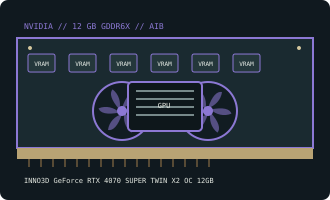

[ NVIDIA // RETAIL AIB GRAPHICS CARD ]
INNO3D GeForce RTX 4070 SUPER TWIN X2 OC 12GB
TWIN X2 OC dual-fan, 12 GB GDDR6X; exact board model N407S2-126XX-186162N.

Recorded board specifications
| Exact retail board / SKU | N407S2-126XX-186162N — TWIN X2 OC dual-fan, 12 GB GDDR6X |
|---|---|
| GPU | GeForce RTX 4070 SUPER (AD104) |
| Memory / bus | 12 GB GDDR6X; 192-bit memory interface. This is the board-specific capacity, not a different-capacity sibling. |
| Host interface | PCI Express 4.0 x16 card; compatible with PCIe x16 slots of earlier generations, subject to system and firmware support. |
| Board power / PSU | 220 W reference-class board power; use a quality PSU with appropriate headroom. PSU guidance is a system recommendation, not the GPU’s power draw; final load varies with the rest of the system and factory settings. |
| Auxiliary power | 1 × 8-pin PCIe on this board variant |
| Card envelope / slots | 250 × 118 × 42 mm; approximately 2-slot; the listed length/thickness apply to this exact SKU and should be checked against case clearance, adjacent slots, and power-cable bend space. |
| Display outputs | 3 × DisplayPort 1.4a and 1 × HDMI 2.1a. Output socket count and simultaneous-display limits are not necessarily the same. |
| Vendor-first index | NVIDIA retail and GPU vendor index |
Variant and fit caveats
This TWIN X2 OC board uses an 8-pin input rather than assuming every RTX 4070 SUPER card uses the same 16-pin socket. Confirm the manufacturer SKU and revision before cabling; allow the card’s 250 mm length and two-slot cooler clearance.
Partner-card dimensions, clocks, cooling, power input, and port layout are not universal specifications for the GPU family. Confirm the exact model number on the board label and current manufacturer data before purchasing, fitting a PSU cable, or selecting a case.
Manufacturer and reference links
- INNO3D GeForce RTX 4070 SUPER series launch announcementOfficial manufacturer announcement listing the RTX 4070 SUPER line; use the exact board model and independent reference for board-specific fit details.
- TechPowerUp INNO3D RTX 4070 SUPER TWIN X2 OC board referenceIndependent technical reference for this board or GPU family; partner-board dimensions and connectors should be cross-checked against the manufacturer.
- Tech for Techs — INNO3D GEFORCE RTX 4070 SUPER TWIN X2 - ReviewIndependent video review; treat as supplementary context, not primary manufacturer documentation.